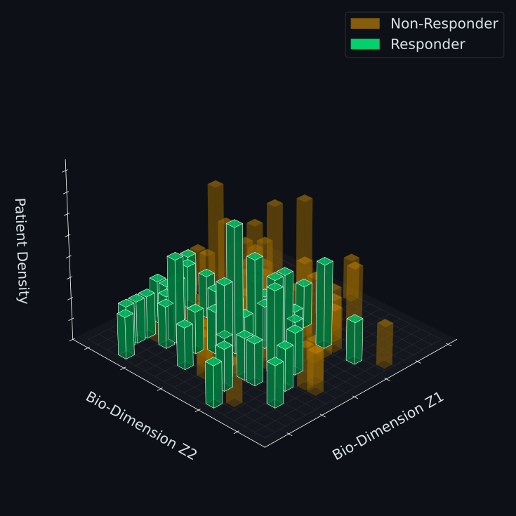
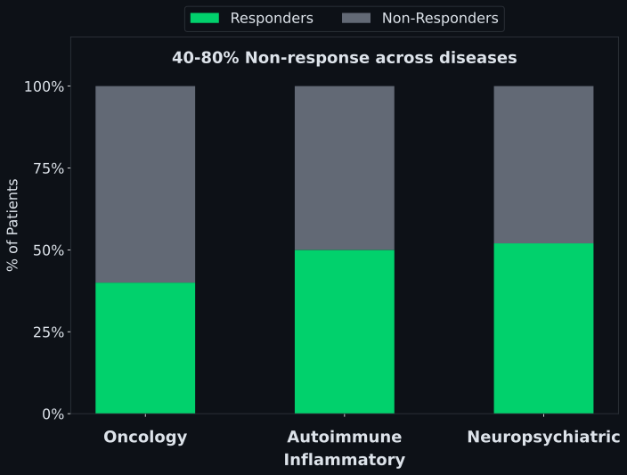
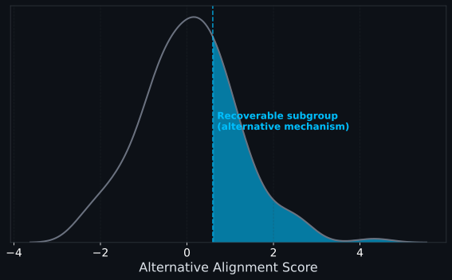
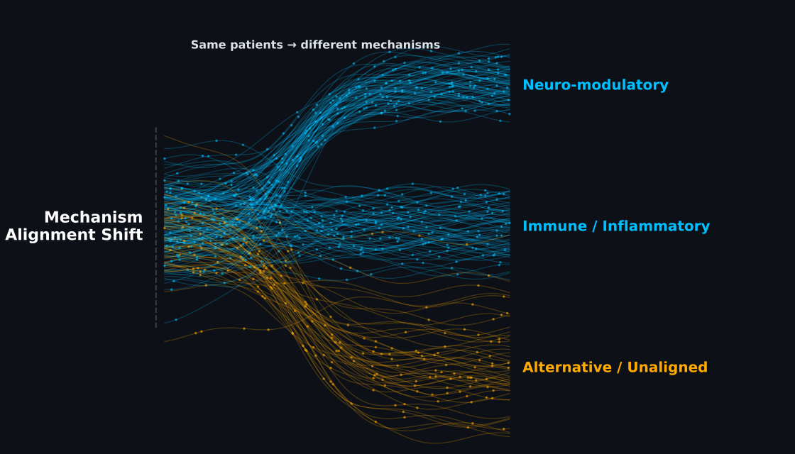
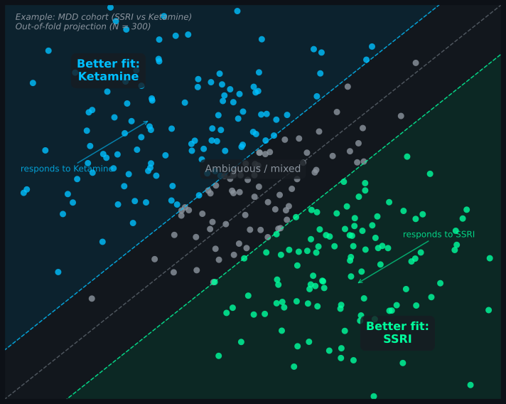

Rapid, Mechanism-Specific
Slow, System-Wide
(e.g., 21.9% → 55.6%)
(consistent across TNF / IL-17 cohorts)
(reproducible across SSRI / ketamine)


Biology determines compatibility.


No retraining required
No indication-specific models